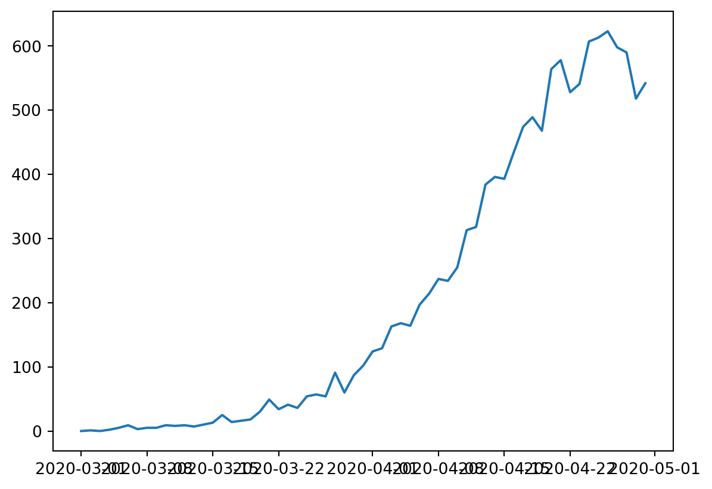
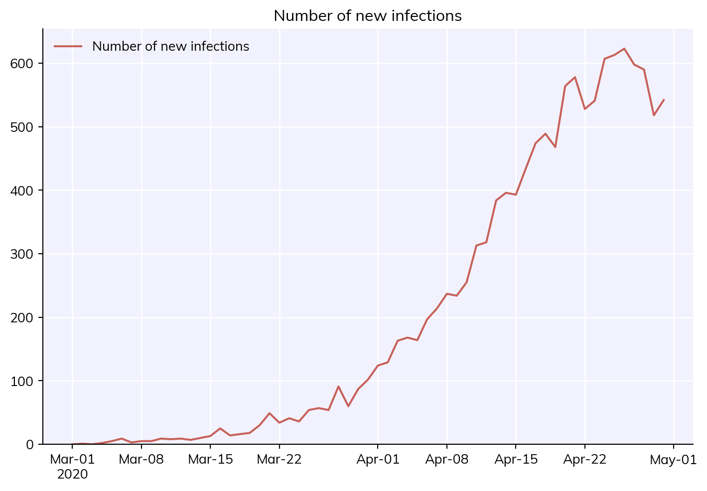
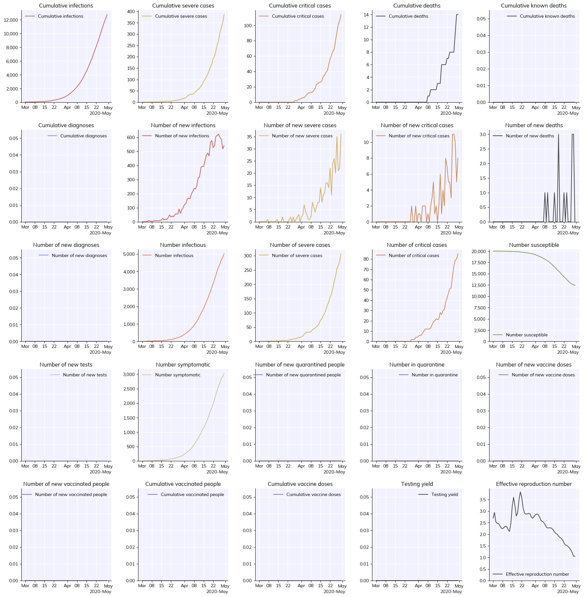
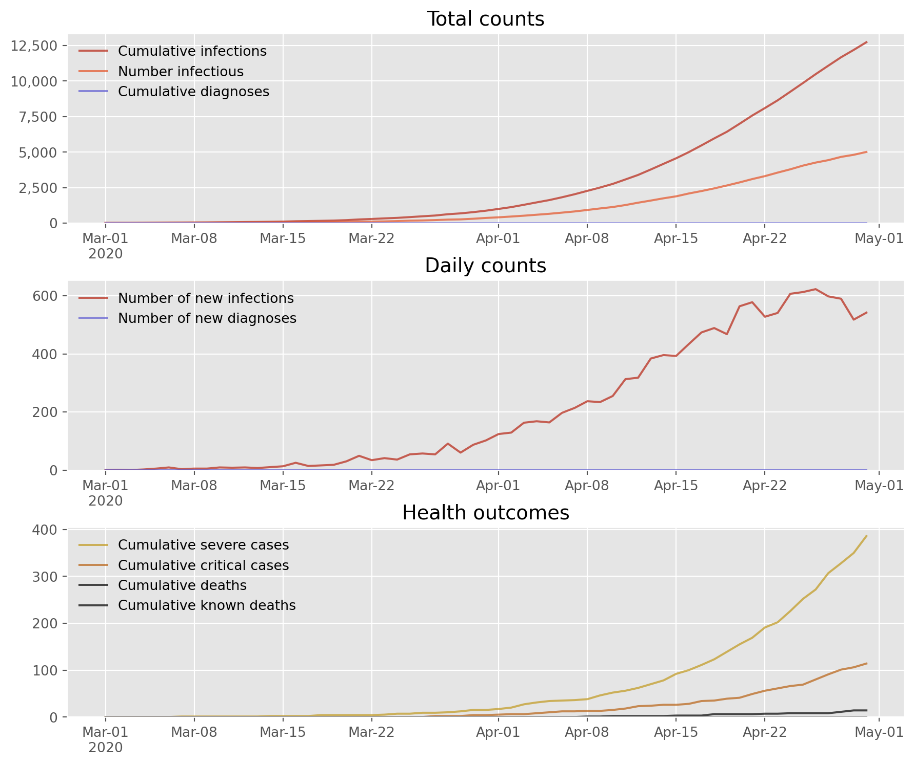
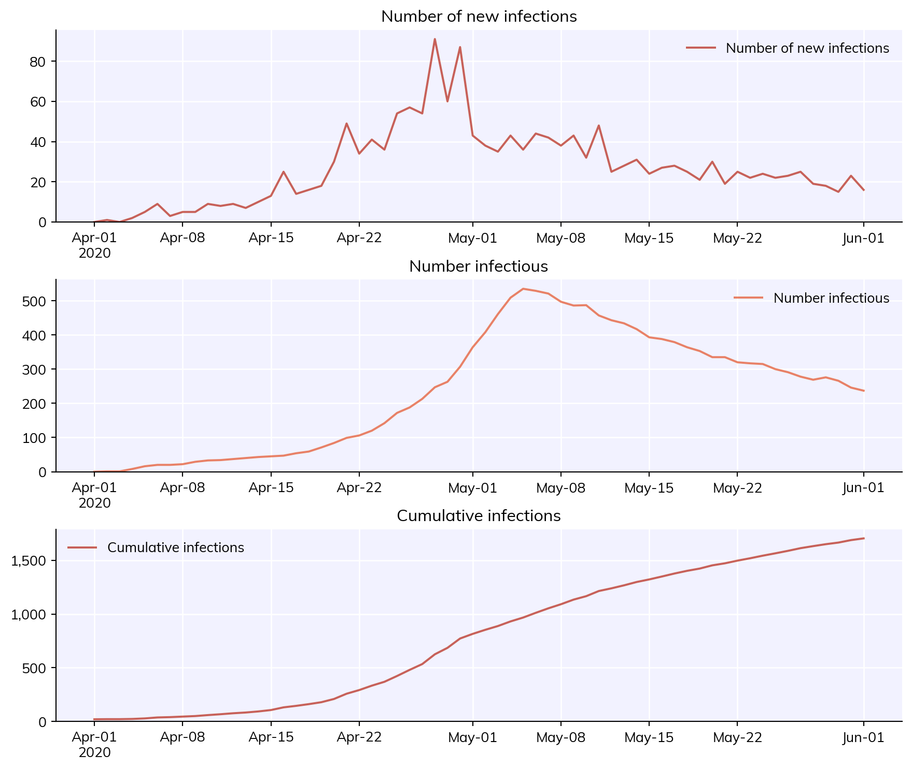

This tutorial provides a brief overview of options for plotting results, printing objects, and saving results.
Click here to open an interactive version of this notebook.
Global plotting configuration
Covasim allows the user to set various options that apply to all plots. You can change the font size, default DPI, whether plots should be shown by default, etc. (for the full list, see cv.options.help()). For example, we might want higher resolution, to turn off automatic figure display, close figures after they’re rendered, and to turn off the messages that print when a simulation is running. We can do this using built-in defaults for Jupyter notebooks (and then run a sim) with:
import covasim as cvcv.options(jupyter=True, verbose=0) # Standard options for Jupyter notebooksim = cv.Sim()sim.run()
While a sim can be plotted using default settings simply by sim.plot(), this is just a small fraction of what’s available. First, note that results can be plotted directly using e.g. Matplotlib. You can see what quantities are available for plotting with sim.results.keys() (remember, it’s just a dict). A simple example of plotting using Matplotlib is:
import pylab as pl # Shortcut for import matplotlib.pyplot as pltpl.plot(sim.results['date'], sim.results['new_infections'])

However, as you can see, this isn’t ideal since the default formatting is…not great. (Also, note that each result is a Result object, not a simple Numpy array; like a pandas dataframe, you can get the array of values directly via e.g. sim.results.new_infections.values.)
An alternative, if you only want to plot a single result, such as new infections, is to use the plot_result() method:
sim.plot_result('new_infections')

You can also select one or more quantities to plot with the first (to_plot) argument, e.g.
Another useful option is to plot an overview of everything in a simulation. We can do this with the to_plot='overview' argument. It’s quite a lot of information so we might also want to make a larger figure for it, which we can do by passing additional arguments (which, if recognized, are passed to pl.figure()). We can also change the date format between 'sciris' (the default), 'concise' (better for cramped plots), and 'matplotlib' (Matplotlib’s default):
sim.plot('overview', n_cols=5, figsize=(20,20), dateformat='concise', dpi=50) # NB: dateformat='concise' is already the default for >2 columns

While we can save this figure using Matplotlib’s built-in savefig(), if we use Covasim’s cv.savefig() we get a couple advantages:
cv.savefig(filename='my-fig.png')
'my-fig.png'
<Figure size 672x480 with 0 Axes>
First, it saves the figure at higher resolution by default (which you can adjust with the dpi argument). But second, it stores information about the code that was used to generate the figure as metadata, which can be loaded later. Made an awesome plot but can’t remember even what script you ran to generate it, much less what version of the code? You’ll never have to worry about that again.
cv.get_png_metadata('my-fig.png')
Covasim version: 3.1.7
Covasim branch: main
Covasim hash: 48b323e
Covasim date: 2026-05-26 13:01:58 UTC
Covasim caller branch: main
Covasim caller hash: 48b323e
Covasim caller date: 2026-05-26 13:01:58 UTC
Covasim caller filename: /home/cliffk/idm/covasim/covasim/misc.py
Covasim current time: 2026-May-26 09:03:26
Covasim calling file: /tmp/ipykernel_435743/1033588508.py
Customizing plots
We saw above how to set default plot configuration options for Jupyter. Covasim provides a lot of flexibility in customizing the appearance of plots as well. There are three different levels at which you can set plotting options: global, just for Covasim, or just for the current plot. To give an example with changing the figure DPI: - Change the setting globally (for both Covasim and Matplotlib): sc.options(dpi=150) or pl.rc('figure', dpi=150) (where sc is import sciris as sc) - Change for Covasim plots, but not for Matplotlib plots: cv.options(dpi=150) - Change for the current Covasim plot, but not other Covasim plots: sim.plot(dpi=150)
The easiest way to change the style of Covasim plots is with the style argument. For example, to plot using a built-in Matplotlib style would simply be:
sim.plot(style='ggplot')

In addition to the default style ('covasim'), there is also a “simple” style. You can combine built-in styles with additional overrides, including any valid Matplotlib commands:
Technically, this saves as a gzipped pickle file (via sc.saveobj() using the Sciris library). By default this does not save the people in the sim since they are very large (and since, if the random seed is saved, they can usually be regenerated). If you want to save the people as well, you can use the keep_people argument. For example, here’s what it would look like to create a sim, run it halfway, save it, load it, change the overall transmissibility (beta), and finish running it:
sim_orig = cv.Sim(start_day='2020-04-01', end_day='2020-06-01', label='Load & save example')sim_orig.run(until='2020-05-01')sim_orig.save('my-half-finished-sim.sim') # Note: Covasim always saves the people if the sim isn't finished running yetsim = cv.load('my-half-finished-sim.sim')sim['beta'] *=0.3sim.run()sim.plot(['new_infections', 'n_infectious', 'cum_infections'])

Aside from saving the entire simulation, there are other export options available. You can export the results and parameters to a JSON file (using sim.to_json()), but probably the most useful is to export the results to an Excel workbook, where they can easily be stored and processed with e.g. Pandas:
import pandas as pdsim.to_excel('my-sim.xlsx')df = pd.read_excel('my-sim.xlsx')print(df)